Clustering Report
何剑，信研3班，2013210943
1. Algorithms Review2. Clustering Demo
3. Analysis of K-means
4. Analysis of SLC
5. Image segmentation
1. Algorithms Review
1.1 K-means
K-means is a very old algorithm for clustering. First, initialize k centers. Second, assign each point to the closest center. Third, Recompute center in each cluster. Details of K-means listed below:
- Determine the value of K.
- Choose K cluster centres randomly.
- Each data point is assigned to its closest centroid.
- Use the mean of each cluster to update each centroid.
- Repeat until no more new assignment.
- Return the K centroids.
1.2 Sequential Leader Clustering (SLC)
SLC is a online clustering algorithm. The basic idea is when a new point came, assign this point to either a old cluster (if distance between point and old cluster center is smaller than a threshold) or establish a new cluster. This algorithm is very helpful in online applications such as Facebook and Renren.com
- Compute the distance between the new data point and every cluster's centre.
- If the distance is smaller than the chosen threshold, assign the new data point to the corresponding cluster and re-compute cluster centre.
- Otherwise, create a new cluster with the new data point as its centre.
2. Clustering Demo
In this assignment, I have implemented a clustering algorithm demo by javascripts. I love the simplicity yet extremely powerful expressiviness of javascripts. My clustering demo has several features.
- User can set K for K-means experiment
- For K-means algorithm: we can control iteration number by next/prev
- For K-means algorithm: support play / stop to automatical iterate
- Provide good animated transition between two iterations
Following is a screenshot of my clustering demo.
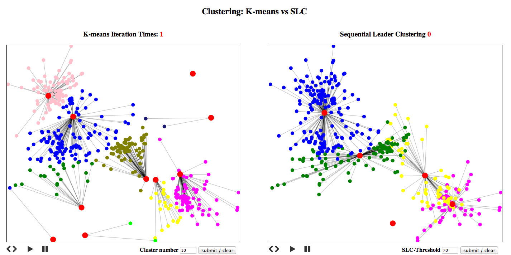3. Analysis of K-means
With the clustering demo, I have set up a experiment to obeserve behavior of K-means
3.1 Configuration
I use 10 clusters, and use pseudo 2-dimentional gaussian distribution to generate data points. (total 400 data points) Before running K-means, I have done some data preprocessing such as finding extreme of data in each dimensions
3.2 Running Results
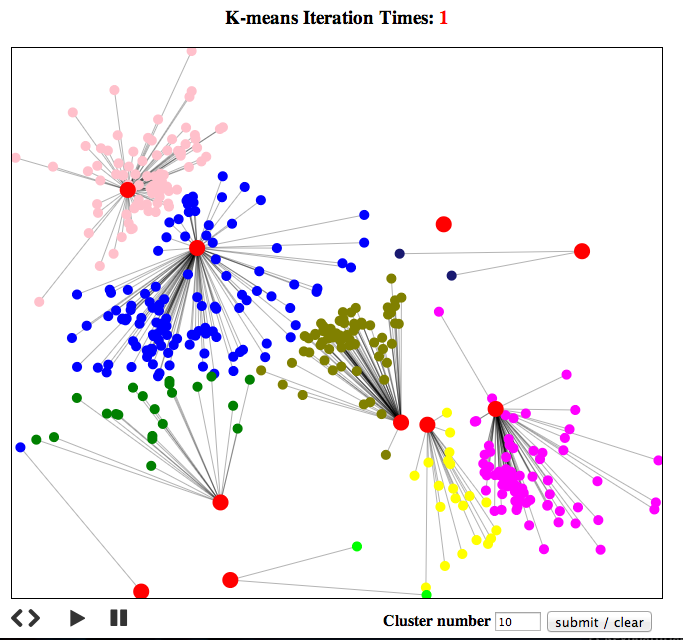 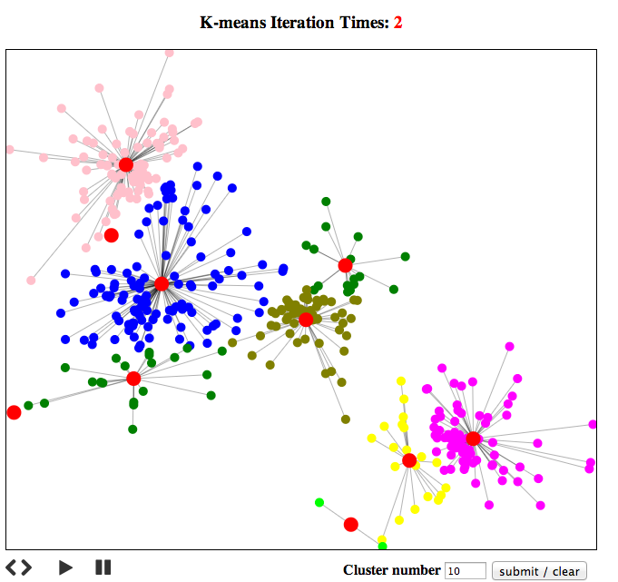 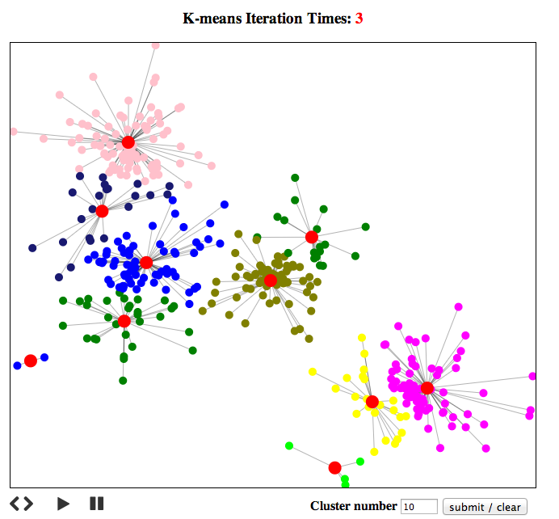 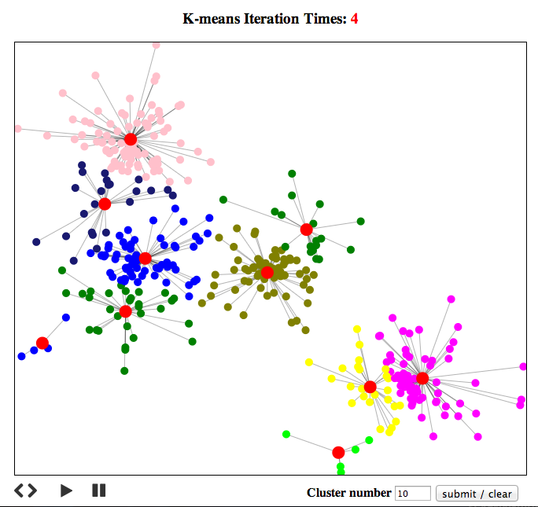 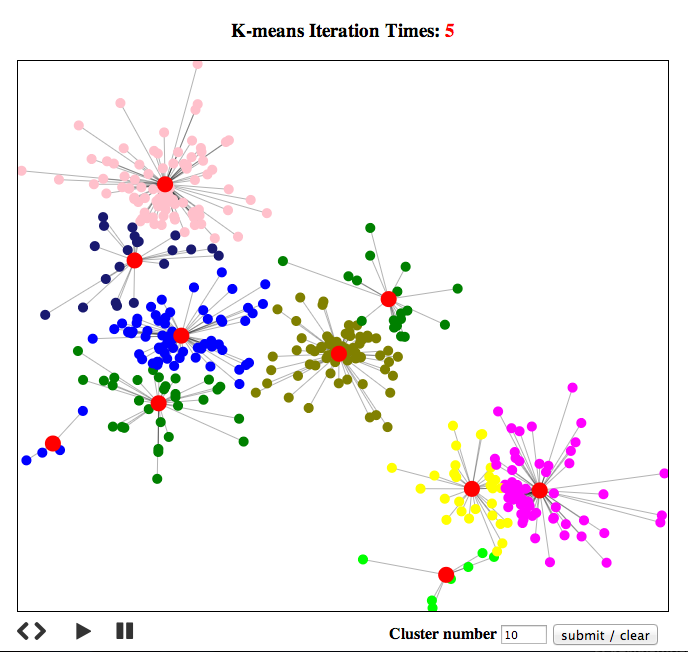 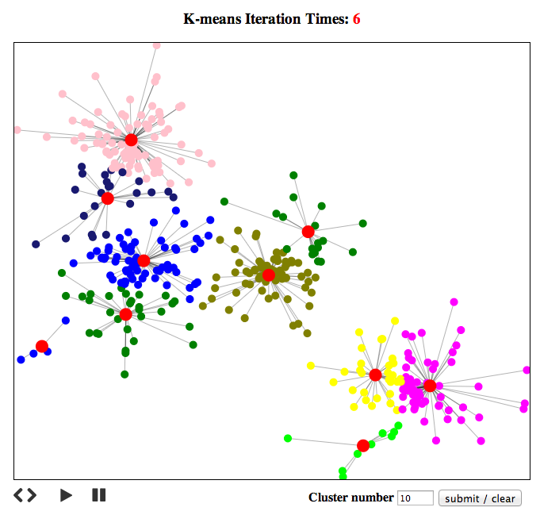 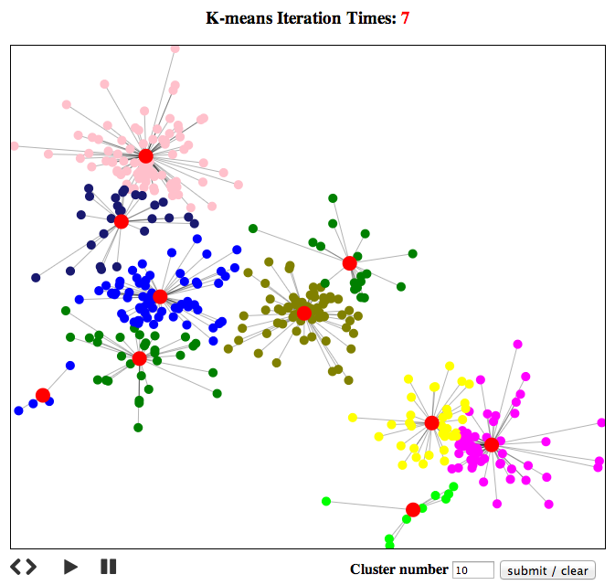 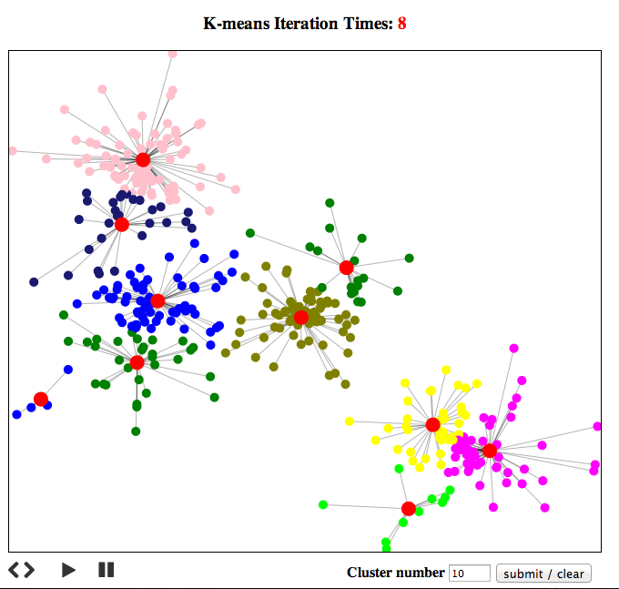3.3 Some Obeservations
K-means converge fast: For K = 10 and numData = 400, it usually converge in just 10 iterations
K is hard to determine: When K is larger than the underlying cluster number, result usually not good. For instance, in my experiments, I only use 4 underlying gaussian distribution to generate 400 data points (each generate 100). Then when K = 10, K-means tend to split one underlying gaussian to several cluster.
4. Analysis of SLC
I just implemented SLC, The result is much worser than K-means, K-means has clearly find 4 underlying clusters, while SLC only find 3 of them.
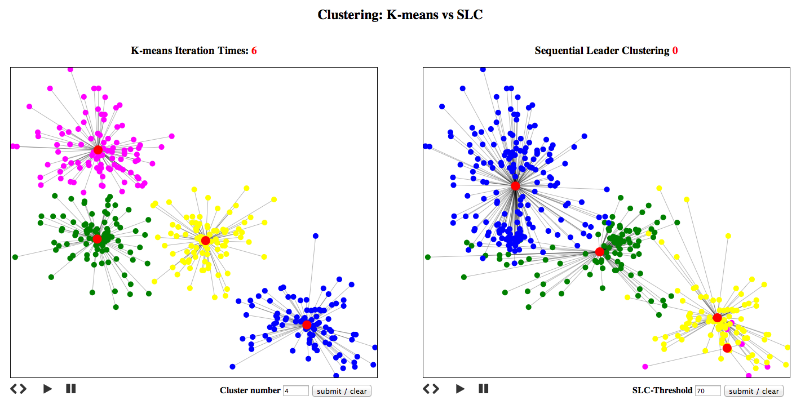5. Image segmentation
5.1 Simple Image
I also implemented image segmentation by K-means. My solution is very simple: Use K-means clustering on the RGB values of each image, and find K center RGB values of the image. For this experiment, I set K = 6.
Before:
After:
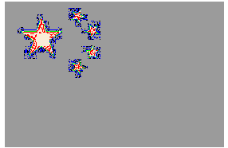Original image only has 2 different RGB values (yellow and red), However after K-means clustering, there are 3 clusters. Thus for image with less color, K-means might over cluster the image
5.2 Complex Image
I also tried a very complex image "weChat". Result looks ok, still K = 6
Before:
After:
K-means got the almost right result, but the clutersing is very rough which is hard to use for future process